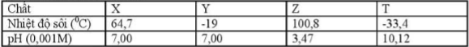

Đề môn Hóa Học số 4
Trường THCS và THPT Nguyễn Khuyến
90
:phút
00
:giây
Ghi Chú
Cho biết nguyên tử khối của các nguyên tố: H=1; C=12; N=14; O=16; Na=23;
Mg=24; Al=27; S=32; Cl=35,5; Ca-40; Ba=137; Fe=56; Cu=64
Câu 1:
Hoà tan hoàn toàn 47,4 gam phèn chua KAl(SO
4
)
2
.12H
2
O vào nước, thu được dung dịch X. Cho toàn bộ X tác dụng với 100 ml dung dịch Ba(OH)
2
1,5 M, sau phản ứng thu được m gam kết tủa. Giả mị của m là:
A: 23,3.
B: 54,40.
C: 42,75.
D: 62,2.
Câu 2:
Cho dãy các chất: Al, Al(OH)
3
, Zn(OH)
2
, NaHCO
3
, Na
2
SO
4
. Sô chất trong dãy vừa phản ứng được với dung dịch HCl, vừa phản ứng được với dung dịch NaOH là
A: 2
B: 5
C: 4
D: 3
Câu 3:
Trong công nghiêp: X dùụg điều chế andehit axetic, Y dùng điều chế axit axetic theo phương pháp hiện đại, Z dùng để điều chế phenol. X, Y, Z không phải là chất nào dưới đây?
A: Cumen.
B: Methanol.
C: Etilen.
D: Etanol.
Câu 4:
Khí X làm đục nước vôi trong và được dùng làm chất tẩy trắng bột gỗ trong công nghiệp giấy. Chất X là:
A: CO
2
.
B: SO
2
.
C: NH
3
.
D: O
3
.
Câu 5:
Cho phản ứng hóa học: Cl
2
+ KOH → KCl + KClO
3
+ H
2
0. Tỉ lệ giữa số nguyên tử clo đóng vai trò chát oxi hóa và số nguyên tử clo đóng vai trò chất khử trong phương trình hóa học của phản ứng đã cho tương ứng là:
A: 1:5.
B: 5:1.
C: 1:3.
D: 3:1.
Câu 6:
Cho X, Y, Z, T là các chất khác nhau trong số 4 chất ancol metylic, andehit fomic, axit fomic và metyl amin và các tính chất sau:

Nhận xét nào sau đây đúng?
A: T là CH
3
OH.
B: Z là HCOOH.
C: X là HCHO.
D: Y là NH
3
.
Câu 7:
Cho 23,7 gam KMnO
4
phản ứng hết với dung dịch HCl đặc (dư), thu được V lít khí Cl
2
(đktc). Giá trị của V là:
A: 8,40.
B: 3,36.
C: 6,72.
D: 5,60.
Câu 8:
Hấp thụ hoàn toàn 4,48 lít khí CO
2
(ở đktc) vào 500 ml dung dịch hỗn hợp gồm NaOH 0,1M và Ba(OH)
2
0,2M, sinh ra m gam kết tủa. Giá trị của m là:
A: 17,73.
B: 19,70.
C: 11,82.
D: 9,85.
Câu 9:
Cho 5,76 gam Cu vào 500 ml dung dịch chứa NaNO
3
0,3M và HCl 0,6 M. Thể tích khi NO (đktc) là:
A: 1,344 lít.
B: 2,016 lít.
C:0,896 lít.
D: 1,680 lít.
Câu 10:
Cho bột Fe vào dung dịch AgNO
3
dư, sau khi phản ứng xảy ra hoàn toàn, thu được dung dịch gồm các chất tan:
A: Fe(NO
3
)
2
, Fe(NO
3
)
3
.
B: Fe(NO
3
)
2
, Ag(NO
3
).
C: Fe(NO
3
)
2
, AgNO
3
, Fe(NO
3
)
3
.
D: Fe(NO
3
)
3
, AgNO
3
.
Câu 11:
Cho m gam Al vào 100 ml dung dich gồm Cu(NO
3
)
2
0,3M và AgNO
3
0,3M. Sau khi các phản ứng xảy ra hoàn toàn thì thu được a gam chất rắn X. Nếu cho a gam X tác dụng với lượng dư dung dịch HCl thì thu được 0,336 lít khí (ở đktc). Giá trị của m
1
và m
2
lần lượt là:
A: 1,08 và 5,43.
B: 8,10 và 5,43.
C: 0,54 và 5,16.
D: 1,08 và 5,16.
Câu 12:
Hòa tan m gam Al bằng dung dịch HNO
3
vừa đủ thì 8,96 lít (đktc) hỗn hợp X gồm NO và NO
2
có tỉ khối hơi so với oxi là 1,3125 và dung dịch Y chứa 66,9 gam muối. Giá trị của m là:
A: 13,5.
B: 8,1.
C: 5,4.
D: 10,8.
Câu 13:
Nung nóng bình kín chứa 0,5 mol H
2
và 0,3 mol ankin X (có bột xúc tác), sau một thời gian thu được hỗn hợp Y. Tỉ khối của Y so với H
2
bằng 16,25. Hỗn hợp Y phản ứng tối đa với 32 gam Br
2
trong dung dịch. Công thức phân tử của X là:
A: C
5
H
8
.
B: C
3
H
4
.
C: C
2
H
2
.
D: C
4
H
6
.
Câu 14:
Nung hỗn hợp gồm 10,8 gam A1 và 16,0 gam Fe
2
O
3
(trong điều kiện không có không khí), sau khi phản ứng xảy ra hoàn toàn thu được chất rắn Y. Khối lượng kim loại trong Y là:
A: 16,6 gam.
B: 22,4 gam.
C: 5,6 gam.
D: 11,2 gam.
Câu 15:
Tiến hành các thí nghiệm sau:
1. Cho Zn vào dung dịch AgNO
3
. 2. Cho Fe vào dung dịch Fe
2
(SO
4
)
3
. 3. Cho Na vào dung dịch CuSO
4
. 4. Dẫn khi CO (dư) qua bột CuO nóng. Các thí nghiệm có tạo thành kim loại là
A: (1) và (4).
B: (3) và (4).
C: (1) và (2).
D: (2) và (3).
Câu 16:
Cho m gam P
2
O
5
tác dụng với 253,5 ml dung dịch NaOH 2M, sau khi các phản ứng xảy ra hoàn toàn thu được dung dich X. Cô cạn dung dịch X, thu được 3m gam chất rắn khan. Giá trị của m là:
A: 21,30.
B: 8,52.
C: 12,78.
D: 7,81.
Câu 17:
Cho ba dung dịch có cùng nồng độ mol: (1) H
2
NCH
2
COOH, (2) CH
3
COOH, (3) CH
3
CH
2
NH
2
. Dãy xếp theo thứ tự pH tăng dần là:
A: (2), (1), (3).
B: (3), (1), (2).
C: (1), (2), (3).
D: (2), (3), (1).
Câu 18:
Thủy phân hoàn toàn 7,46 gam pentapeptit mạch hở X (được tạo nên từ các α-amino axit có dạng NH
2
C
X
H
Y
COOH) bằng dung dịch NaOH dư thu được 11,10 gam muối. Mặt khác thủy phân hoàn toàn 7,46 gam X bằng dung dịch HCl thu được m gam muối. Giá trị m là:
A: 12,55.
B: 10,75.
C: 11,11.
D: 8,90.
Câu 19:
Cho dãy gồm các phân tử và ion: Zn, S, FeO, SO
2
, Fe
2+
, Cu
2+
, HCl. Tổng số phân tử và ion trong dãy vừa có tính oxi hóa, vừa có tính khử là:
A: 7.
B: 5.
C: 4.
D: 6.
Câu 20:
Phát biểu
không
đùng là
A: Xesi được sử dụng làm tế bào quang điện.
B: Có thể làm mềm nước cứng tạm thời bằng cách đun nóng.
C: Phèn chua có công thức K
2
SO
4
.Al
2
(SO
4
)
3
.24H
2
O được dùng để làm trong nước.
D: Thạch cao khan (CaSO
4
) được sử dụng để bó bột trong y học.
Câu 21:
Hòa tan hoàn toàn 1,760 gam hỗn hợp gồm Fe và kim loại X vào bằng dung dịch HCl, thu được 0,896 lít khí H
2
. Mặt khác, hòa tan hoàn toàn 1,760 gam hỗn hợp trên bằng dung dịch HNO
3
loãng (dư), thu được 0,784 lít khí NO (sản phẩm khử duy nhất). Biết các thể tích khí đều đo ở điều kiện tiêu chuẩn. Kim loai X là:
A: Al.
B: Zn.
C: Mg.
D: Cr.
Câu 22:
Khi nói về kim loại hiếm, phát biểu nào sau đây là
sai
?
A: Từ Li đến Cs khả năng phản ứng với nước giảm dần.
B: Các kim loại hiếm có màu trắng bạc và có ánh kim.
C: Trong tự nhiên, các kim loại hiếm chỉ tồn tại ở dạng hợp chất.
D: Kim loại hiếm có nhiệt độ nóng chảy và nhiệt độ sôi thấp.
Câu 23:
Hai nguyên tố X, Y ở cùng nhóm A và thuộc 2 chu kì liên tiếp trong bảng tuần hoàn. Tổng số proton của 2 nguyên tử thuộc 2 nguyên tố là 44 (Z
X
< Z
Y
). Cho các phát biểu sau:
l. X bên trong không khí và nước.
2. Có thể dát X thành lát mỏng để gói thực phẩm.
3. X tan được trong dung dịch HCl và NaOH.
4. Trong công nghiệp X được điều chế bằng phương pháp điện phân nóng chảy.
Số phát biểu đúng:
A: 4.
B: 3.
C: 2.
D: 1.
Câu 24:
Cho dãy các chất: NaOH, Sn(OH)
2
, Pb(OH)
2
, Al(OH)
2
, Cr(OH)
3
. Số chất trong dãy có tính chất lưỡng tính là:
A: 3.
B: 1.
C: 4.
D: 2.
Câu 25:
Hòa tan hết 1,69 gam oleum có công thức H
2
SO
4
.3SO
3
vào nước dư. Trung hòa dung dịch thu được cần V ml dung dịch KOH 1M. Giá trị của V là:
A: 30.
B: 40.
C: 10.
D: 20.
Câu 26:
Phát biểu nào sau đây là
sai
?
A:Al
2
O
3
là oxit lưỡng tính.
B: Bột Al tự bốc cháy khi tiếp xúc với khí Cl
2
.
C: Al(OH)
3
tan được trong dung dich NH
3
dư.
D: Al là kim loại phổ biến nhất trong vỏ trái đất.
Câu 27:
Dẫn 4,48 lít hỗn hợp khí gồm N
2
và Cl
2
vài dung dịch Ca(OH)
2
dư. Sau khi phản ứng xảy ra hoàn toàn, còn lại l,12 lít khí thoát ra. Biết thể tích các khí đó ở điều kiện tiêu chủẩn. Phần trăm thể tích của Cl
2
trong hỗn hợp trên là:
A: 11,62%.
B: 25,00%.
C: 75,00%.
D: 88,38%.
Câu 28:
Các dung dịch nào sau đây đều có tác dụng với Al
2
O
3
?
A: HCl, NaOH.
B: NaCl, NaOH.
C: Na
2
SO
4
, HNO
3
.
D: HNO
3
, KNO
3
.
Câu 29:
Hỗn hợp X gồm Fe
3
O
4
và Al có tỉ lệ mol tương ứng 1 : 3. Thực hiện phản ứng nhiệt nhôm x (không có không khí) đến khi phản ứng xảy ra hoàn toàn thu được hỗn hơp gồm:
A: Al
2
O
3
, Fe và Fe
3
O
4
.
B: Al
2
O
3
và Fe.
C: Al, Fe, Fe
3
O
4
và Al
2
O
3
.
D: Al, Fe và Al
2
O
3
.
Câu 30:
Đun nóng 23 gam ancol etylic với 24 gam axit axetic (xúc tác H
2
SO
4
đặc) thu được 28,16 gam este. Hiệu suât của phản ứng este hóa là
A: 64%.
B: 81,68%.
C: 85,23%.
D: 80%.
Câu 31:
Cho m gam X gồm Na, Al, Fe vào dụng dịch KOH dư thì thu được 0,35 mol H
2
. Nếu cho m gam X vào nước dư thì thu được 0,2 mol H
2
và chất rắn Y. Hòa tan hẽt Y trong HCl dư thu được 0,25 mol H
2
. Giá trị m là:
A: 18,9.
B: 20,2.
C: 13,3.
D: 21,7.
Câu 32
Cho m gam hỗn hơp Mg, Al và Zn tác dụng với 0,448 lít clo (đkc) thu được chất rắn X. Cho X phản ứng với dung dịch HCl dư thu được 0,03 mol khí và dung dịch chứa 4,98 gam muối m có giá trị là:
A: 2,14.
B: 1,43.
C: 2,86.
D: 3,12.
Câu 33:
Cho 1,56 gam hỗn hợp gồm Al và Al
2
O
3
phản ứng hết với dung dịch HCl (dư), thu được V lít khí H
2
(đktc) và dung dịch X. Nhỏ từ từ dung dịch NH
3
đến dư vào dung dịch X thu được kết tủa, lọc hết lượng kết tủa, nung đến khói lượng không đổi thu được 2,04 gam chất rắn. Giá trị của V là:
A: 0,672.
B: 0,224.
C: 1,344.
D: 0,448.
Câu 34:
Cho V lít dung dịch NaOH 2M vào dung dịch chứa 0,1 mol Al
2
(SO
4
)
3
và 0,1 mol H
2
SO
4
đến khi phản ứng hoàn toán, thu được 7,8 gam kết tủa. Giả trị lớn nhất của V để thu được lượng kết tủa trên là:
A: 0,45.
B: 0,35.
C: 0,05.
D: 0,25.
Câu 35:
Một dung dich X gồm 0,01 mol Na
+
; 0,02 mol Ca
2+
; 0,02 mol HCO
3
-
và a mol ion X (bỏ qua sự điện li của nước). Ion X và giá trị của a là:
A: OH
-
và 0,03.
B: NO
3
-
và 0,03.
C: CO
3
2-
và 0,03.
D: Cl
-
và 0,01.
Câu 36:
Cho m gam hỗn hợp Al và Na vào nước dư. Sau khi các phản ứng xảy ra hoàn toàn, thu được 2,24 lít khí H
2
(đktc) và 3,35 gam chất rắn không tan. Giả trị của m là:
A: 5,85.
B: 3,70.
C: 6,95.
D: 4,35.
Câu 37:
Trong các phát biểu sau:
1. Theo chiều tăng dần điện tích hạt nhân, các kim loại kiềm thổ (từ Be đến Ba) có nhiệt độ nóng chảy giảm dần.
2. Kim loại Cs dùng làm tế bào quang điện.
3. Kim loại Mg có kiểu mạng tinh thể lập phương tâm khối.
4. Kim loại Na, Be và Ba đều phản ứng với nước ở điều kiện thường.
5. Kim loại Mg tác dụng với nước khi đun nóng.
Số nhận xét đúng?
A: 2.
B: 4.
C: 1.
D: 3.
Câu 38:
Chất hữu cơ X có công thức phân tử C
3
H
6
O
2
, phản ứng được với Na và dung dịch AgNO
3
trong NH
3
nhưng không phản ứng với dung dịch NaOH. Hiđro hóa hoàn toàn X được chất Y có thể hòa tan Cu(OH)
2
tạo dung dịch màu xanh lam. Công thức của X là:
A: C
2
H
5
COOH.
B: HO-[CH
2
]
2
-CHO.
C: CH
3
-CH(OH)-CHO.
D: HCOOC
2
H
5
.
Câu 39:
Dãy các kim loại đều có thể được điều chế bằng phương pháp điện phân dung dịch muối (với điện cực trơ) là:
A: Al, Fe, Cr.
B: Ni, Cu, Ag.
C: Li, Ag, Sn.
D: Ca, Zn, Cu.
Câu 40:
Hòa tan hoàn toàn 16 gam hỗn hợp Mg và Fe bằng dung dịch H
2
SO
4
loãng 20% (vừa đủ). Sau phản ứng thấy khối lượng dung dịch tăng thêm 15,2 gam. Nồng độ % của MgSO
4
trong dung dịch sau phản ứng là:
A: 9,84.
B: 19,76.
C: 15,74.
D: 11,36.
Câu 41:
Thủy phân triglixerit X thu được các axit béo gồm axit oleic, axit panmitic và axit stearic. Số mol O
2
cần dùng để đốt cháy hoàn toàn 8,6gam X là:
A: 0,72.
B: 0,84.
C: 0,90.
D: 0,78.
Câu 42:
Cho 300 ml dung dịch NaOH 0,1M phản ứng với 100ml dung dịch Al
2
(SO
4
)
3
0,1M. Sau khi phản ứng xảy ra hoàn toàn, thu được a gam kết tủa. Giá trị của a là:
A: 1,56.
B: 2,34.
C: 1,17.
D: 0,78.
Câu 43:
Dung dịch X chứa m gam chất tan gồm Cu(NO
3
)
2
(m
Cu(NO
3
)
2
> 5 gam) và NaCl. Điện phân dung dịch X với điện cực trơ, màng ngăn xốp với cường độ dòng điện không đối. Sau thời gian t giây thì thu được dung dịch Y chứa m-18,79 gam chất tan và có khí thoát ra ở catot. Nếu thời gian điện phân là 2t giây thì thu được dung dịch Z chứa 21 gam chất tan và hỗn hợp khí T chứa 3 khí và có tỉ khối hơi so với hidro là 16. Cho Z vào dung dịch chứa 0,1 mol FeCl
2
và 0,2 mol HCl thì thu được dung dịch chứa a+16,46 gam chất tan và có khí thoát ra. Tổng giá trị m+a là:
A: 73,42.
B: 72,76.
C: 74,56.
D: 76,24.
Câu 44:
Hỗn hợp X gồm một anđehit đơn chức, mạch hở và một ankin (phân tử hơn kém nhau một nguyên tử cacbon). Đốt cháy hoàn toàn a mol X thu được 2,4a mol CO
2
và a mol nước. Nếu cho 1 mol X tác dụng với dung dịch AgNO
3
/NH
3
thì số mol AgNO
3
phản ứng tối đa là:
A: 1,4.
B: 1,8.
C: 2,0.
D: 2,4.
Câu 45:
Hòa tan hoàn toàn m gam Fe bằng dung dịch HNO
3
thu được dung dịch X và O,672 lít NO (đktc). Thêm dung dịch chứa 0,05 mol HCl vào dung dịch X thì thấy khí NO tiếp tục thoát ra và thu được dung dịch Y. Để phản ứng hết với các chất trong dung dịch Y cần vừa đủ lOOml mol NaOH 1,3M. Dung dịch Y hòa tan tối đa bao nhiêu gam Cu? (biết NO là sản phẩm khử duy nhất của N
+5
).
A: 1,52.
B: 2,88.
C: 2,24.
D: 1,60.
Câu 46:
Tiến hành các thí nghiệm sau:
1. Cho dung dịch Na
2
S
2
O
3
vào dung dịch H
2
SO
4
loãng.
2. Suc khí CO
2
vào dung dịch Na
2
SiO
3
.
3. Cho AgNO
3
vào dung dịch Fe(NO
3
)
2
.
4. Dẫn khí etilen qua dung dịch KMnO
4
.
5. Cho Al
4
C
3
vào dung dịch NaOH dư.
Số thí nghiệm thu được kết tủa là:
A: 3
B: 4
C: 5
D: 2
Câu 47:
Hòa tan hoàn toàn 11,6 gam hỗn hợp A gồm Fe và Cu vào 87,5 gam HNO
3
50,4%, sau khi kim loại tan hết thu được dung dịch X. Cho 500ml dung dịch KOH 1M vào dung dịch X thu được kết tủa Y và dung dịch Z. Lọc lấy Y rồi nung trong không khí đến khối lượng không đổi thu được 16,0 gam chất rắn. Cô cạn dung dịch Z được chất rắn T. Nung T đến khối lượng không đổi thu được 41,05 gam chất rắn. Nồng độ % của muối Fe(NO
3
)
3
có trong dung dịch X gần nhất với giá trị nào dưới đây?
A: 14%.
B: 28%.
C: 12%.
D: 37%.
Câu 48:
Hòa tan hết 5,36 gam hỗn hợp X gồm FeO, Fe
2
O
3
, Fe
3
O
4
trong dung dịch chứa 0,03 mol HNO
3
và 0,12 mol H
2
SO
4
, thu được dung dich Y và 224 ml NO (đktc). Cho 2,56 gam Cu vào Y, thu được dung dịch z. Biết các phản ứng xảy ra hoàn toàn, NO là sản phẩm khử duy nhất của N
+5
.Khối lượng muối trong Z là:
A: 16,924.
B: 18,465.
C: 19,424.
D: 23,176.
Câu 49:
Chất X là một loại thuốc cảm có CTPT C
9
H
8
O
4
. Cho 1 mol X phản ứng hết với dung dịch NaOH thu được l mol chất Y, l mol chất Z và 2 mol H
2
O. Nung Y với hỗn hợp CaO/NaOH thu được paraffin đơn giản nhất. Chất Z phản ứng với dung dich H
2
SO
4
loãng dư thu được HCHC tạp chức T không tham gia phản ứng tráng gương. Trong các phát biên sau:
l. Chất X phản ứng với NaOH theo tỉ lệ mol 1:2.
2. Chất Y có tính axit mạnh hơn H
2
>CO
3
.
3. Chất Z có công thức phân tử C
7
H
4
O
4
Na.
4. Chất T không tác dụng với axit axetic nhưng có phản ứng với CH
3
OH/H
2
SO
4
đặc.
Số phát biểu đúng?
A: 2.
B: 4.
C: 3.
D: 1.
Câu 50:
Hỗn hợp E gồm chất X (C
3
H
10
N
2
O
4
) và chất Y (C
7
H
13
N
3
O
4
) trong đó Y là muối của axit đa chức, Z là tripeptit. Cho 27,2 gam E tác dụng với dung dịch NaOH dư, đun nóng thu được 0,1 mol hỗn hợp 2 khí. Mặc khác 27,2 gam E phản ứng với dung dịch HCl thu đươc m gam chất hữu cơ. Giá trị của m là:
A: 44,525.
B: 39,350.
C: 34,850.
D: 42,725.
Correct answers: